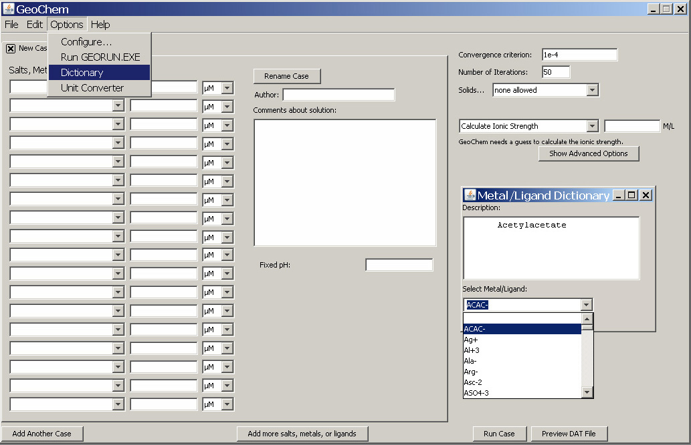

Dictionary-

The Dictionary allows the user to look up the full description of the metal, ligand, or compound that is in the metal / ligand database and may appear in the database as an abbreviation. In the case below, the user has clicked on "Dictionary" and a dialog box opens.
The user has selected ACAC from the drop down menu "Select Metal/Ligand", and the full name of the ligand "Acetylacetate" is shown.
Anything that has been added to the salts database will be included in the "Dictionary".
